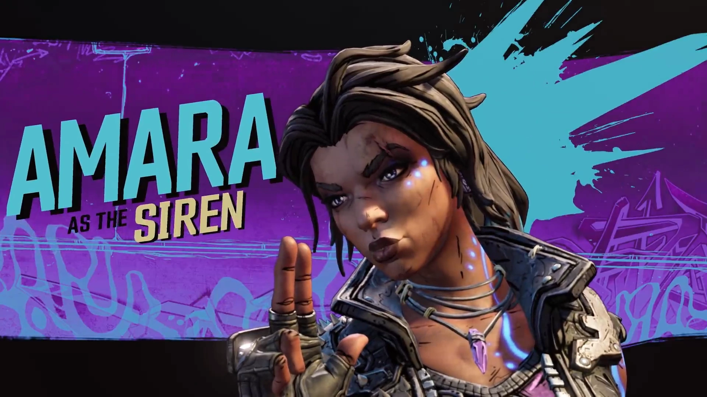
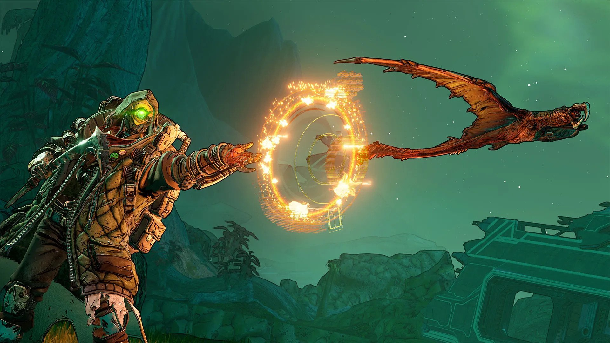
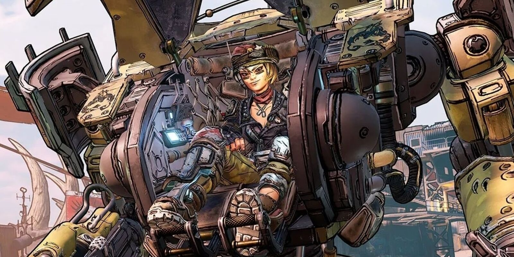

Quando Borderlands foi lançado lá em 2009, o mercado estava aquecido pelo boom dos jogos indies. Foi nesse espaço que um grande game, até então com escopo não lá tão gigante assim, conseguiu seu espaço. O título surfava em basicamente três ondas do momento. A primeira delas é a de personagens carismáticos robóticos, com uma profunda personalidade capaz de roubar as cenas. Aqui, estamos falando de CL4P-TP, também chamado somente de Claptrap. O robozinho foi um dos pontos altos do roteiro do primeiro game, com um carisma que chegou a contagiar crianças e adultos, aproveitando-se muito bem do sucesso que começou com a personagem GLaDOS, o sistema operacional de Portal, lançado em 2007. Por muito tempo, a dupla de robôs roubou a cena em narrativas e criação de personalidade. Outra característica intrínseca de seu momento era o humor que não se leva a sério. A história de Borderlands desde o começo é a de um caçador em busca de uma tumba de deuses antigos que guarda uma arca com poderes e tesouros místicos. Ou seja, o jogo não se propunha a uma seriedade, brincado, por vezes, até consigo mesmo. Essa narrativa nos leva à terceira grande característica de Borderlands: o loot shooter. O termo se refere ao estilo de gameplay em que o jogador atira em inimigos para conseguir armas melhores, para matar outros adversário e pegar outras armas, para matar mais e melhorar ainda mais seus equipamentos. É este loop de ficar mais poderoso para vencer e vencer para ficar mais poderoso que fez tanta gente se manter horas e horas no título lançado 10 anos atrás. Por que estamos falando do jogo original se esta é uma análise de Borderlands 3? Bom, o motivo é que, passada uma década, com outros dois games no meio (contanto o Tales From Borderlands) a série sofre pouquíssimos avanços, colocando este novo jogo como um ultrapassado game de tiro que não soube se renovar.
Amara
Amara é uma personagem nem equilibrada. O melhor uso para a sua Siren é atacar grandes grupos de inimigos ao mesmo tempo, algo que as demais classes têm problemas para fazer. Seus ataques são devastadores por causar dano em área. Ela é uma boa personagem para iniciantes, já que não exige muita mira ou reflexos afiados. Com o ataque Phasegrasp, a Amara consegue invocar um punho gigantesco que segura os inimigos em uma posição por sete segundos para, então, causar um bom dano no bando. Já o golpe Phasecast lança uma projeção astral da personagem, que consegue causar 79 pontos de dano em todos que tiverem o azar de cruzar seu caminho. Por fim, o Phaseslam arremessa a personagem no ar e causa dano a todos ao seu redor quando ela cai no chão. Só tome cuidado, pois seu cooldown é bem longo e demora 26 segundos no total. É um ataque devastador, que causa 84 pontos de dano: utilize-o com sabedoria sempre que você ou seus aliados estiverem cercados por inimigos. Amara é a melhor escolha para aqueles momentos em que você precisa controlar uma multidão de inimigos, mas não é tão forte em lutas solo.
FL4K é muito diferente dos outros personagens jogáveis, pois ele conta com a ajuda de animais para abater ameaças. Cada companheiro animal possui seus próprios benefícios: a Spiderant, que acelera a recuperação de energia; o Jaber, que aumenta sua velocidade; e um Skag que aumenta o dano causado por seus ataques. Eles atacam os inimigos automaticamente e são perfeitos para garantir uma vantagem extra em combate.Além dos aliados animais, FL4K também possui habilidades secundárias capazes de virar o rumo dos combates, como o Desaparecimento, que o torna invisível e mais veloz. É possível disparar até três tiros enquanto o personagem estiver camuflado, e todos eles contam como ataques críticos. O ataque Rakk consegue bombardear inimigos distantes, mas seu principal poder é o raio Gamma.
Como o nome da classe já deixa claro, a Moze é um atiradora nata e, como tal, é a melhor pedida para os jogadores que só querem saber de causar dano e explodir coisas pelo mapa. Ela é a única heroína que pilota seu próprio Mech de combate, e o robô é justamente a parte mais essencial de suas habilidades.É possível escolher entre três armas diferentes para o Mech, além de utilizar um lança-chamas, lança-mísseis e socos mecânicos como habilidades secundárias. Entre todos os heróis do jogo, nenhum é mais letal ou mais recomendado para encarar inimigos que possuem muitos pontos de vida.
Entre as quatro classes, Zane é o que mais se aproxima de um Coringa, com múltiplas utilidades e poderes que dependem de como o jogador pretende aperfeiçoá-lo ao longo da campanha. Na essência, Zane fica mais à vontade como suporte, já que ele pode criar uma barreira de proteção que aumenta o dano dos tiros que passam por ela, além de poder criar um clone para distrair os inimigos e criar armadilhas.Enquanto o clone estiver ativo e parado em uma posição, Zane pode trocar de lugar com ele a qualquer momento, então ele acaba servindo como um teleporte improvisado. Zane também consegue invocar um drone SNTNL armado com metralhadora. O drone é muito bom para descobrir a posição dos inimigos e pode servir como batedor, causando dano em todos os inimigos que encontrar pelo caminho.